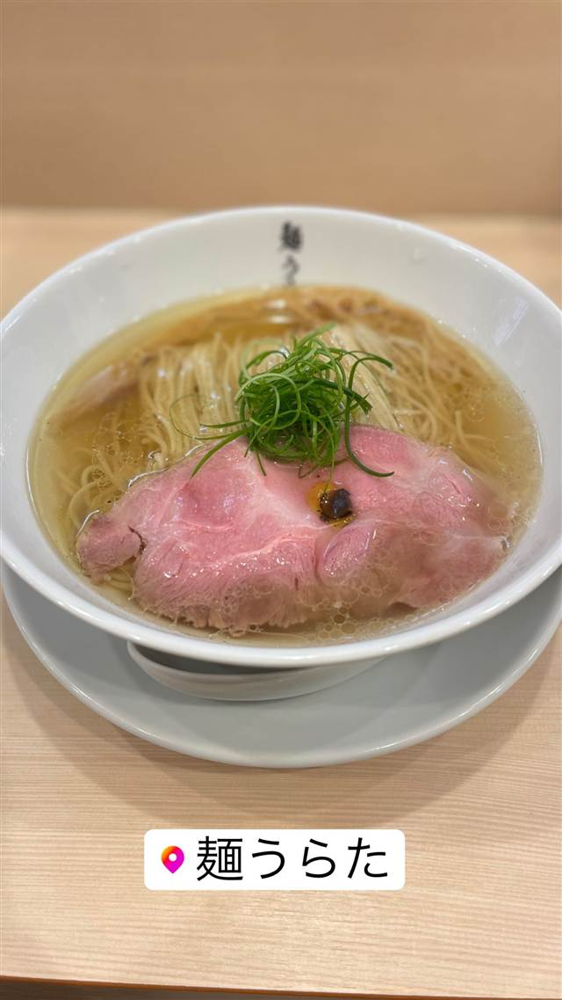
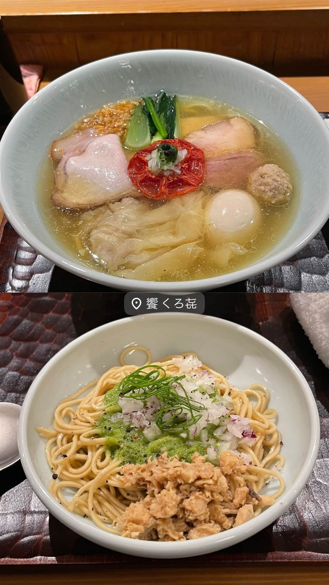
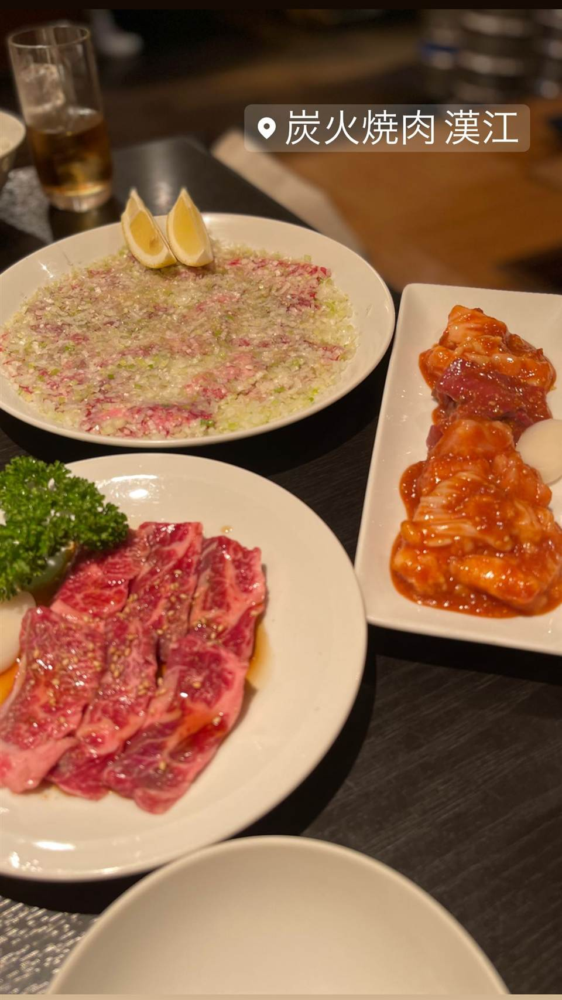
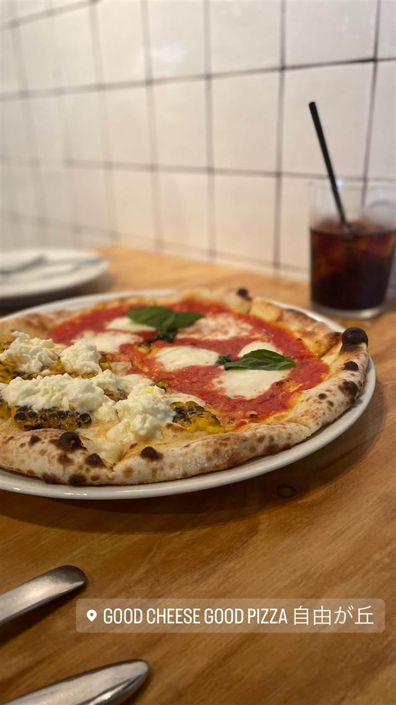

麺うらた
鶏から真鯛へ旨味が変わっていく塩SOBA
麺うらた
店主の浦田直人氏が、鶏・豚と真鯛の骨や魚介出汁を炊き合わせたスープにトリュフオイルなどを効かせた「塩SOBA」を看板に、2021年に自由が丘で開業。飲み進めるうちに鶏から鯛へと旨味の印象が変化する、洗練された一杯が評判。
TRIVIA
豆知識
- スープを飲み進めると鶏から真鯛へと旨味の印象が変化していくよう設計されている
REVIEWS
世間の評判
92.9ラーメンDB3.59食べログ
ラーメンデータベース 口コミ102件・総合951位・最新 2026-09
| 創業 | 2021年開業 |
|---|---|
| 系譜 | 「トラスト方式」で店舗展開する株式会社ムジャキフーズ系列での経験を経て独立 |
| 看板 | 塩SOBA。鶏・豚に真鯛の骨や魚介出汁を合わせたスープが特徴 |
| こだわり | 鶏・豚・野菜と真鯛の骨、魚介出汁を炊き合わせ、トリュフオイルなどで仕上げる |
| どこから | 23区の外れ・近郊 |
| 営業時間 | 月〜金 11:00-23:00 土・日 11:00-04:00 |
| 予算 | 昼 ～¥999 夜 ～¥999 |
| 定休日 | 無休 |
| 予約 | 予約不可 |
| 場所 | 自由が丘 東京都目黒区自由が丘1-12-5 1F |
食べたもの：塩ラーメン
NEARBY
近い店・同じ系統の店
-

★ 塩 浅草橋 饗 くろ㐂(もてなし くろき) 料亭やイタリアンの総料理長経験を持つ店主の塩そば 昼 ¥1,000～¥1,999 夜 ¥1,000～¥1,999 -
 ★
醤油・中華そば 自由が丘駅
NOODLE パドル
元住吉の徳島ラーメン店が移転改称した生姜醤油ラーメン
昼 ¥1,000～¥1,999 夜 ¥1,000～¥1,999
★
醤油・中華そば 自由が丘駅
NOODLE パドル
元住吉の徳島ラーメン店が移転改称した生姜醤油ラーメン
昼 ¥1,000～¥1,999 夜 ¥1,000～¥1,999
-
 ★
家系 自由が丘
渡来武（トライブ）
「武蔵家から渡って来た」が店名の由来のどろどろ濃厚家系
昼 ～¥999 夜 ～¥999
★
家系 自由が丘
渡来武（トライブ）
「武蔵家から渡って来た」が店名の由来のどろどろ濃厚家系
昼 ～¥999 夜 ～¥999
-

★ 焼肉 自由が丘 炭火焼肉 漢江 「ネギ塩焼き」発祥の元祖店で、ネギを30分叩いて香りを引き出す 夜 ¥6,000～¥7,999 -
 パスタ 自由が丘
パスタバル MiKiYA's 自由が丘
モンスーンカフェを育てた元取締役が作る自家製生パスタ
昼 ¥1,000～¥1,999 夜 ¥3,000～¥3,999
パスタ 自由が丘
パスタバル MiKiYA's 自由が丘
モンスーンカフェを育てた元取締役が作る自家製生パスタ
昼 ¥1,000～¥1,999 夜 ¥3,000～¥3,999
-

ピザ 自由が丘 GOOD CHEESE GOOD PIZZA 自由が丘店 清瀬の契約農場の生乳を毎朝仕込むできたてチーズのマルゲリータ 昼 ¥1,000～¥1,999 夜 ¥3,000～¥3,999